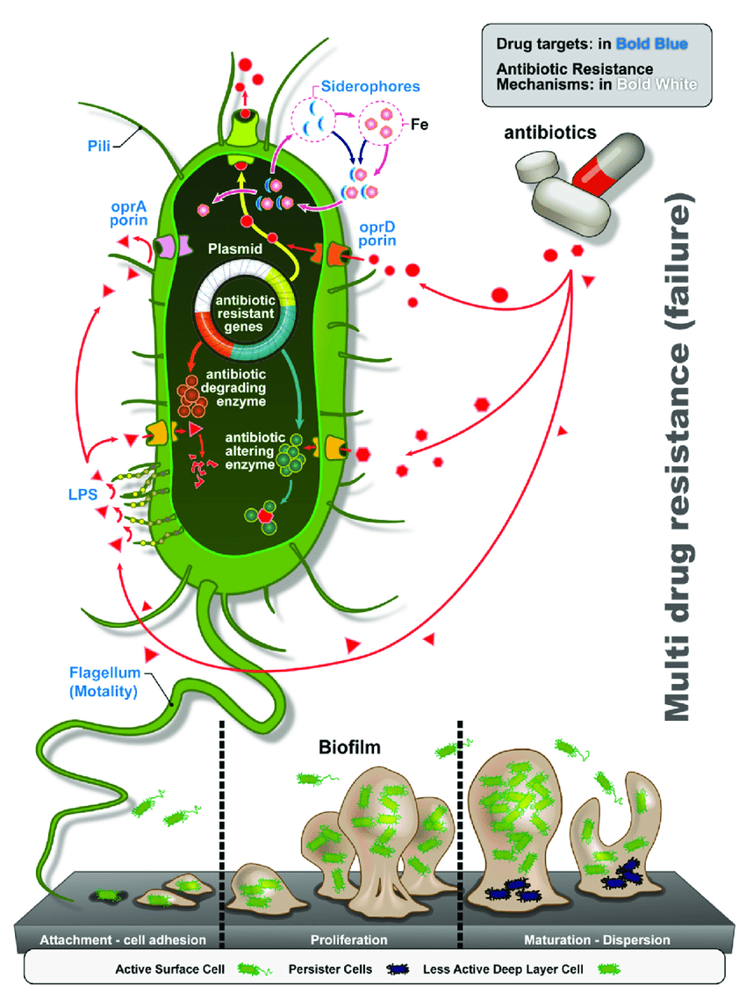

My Work
I'm responsible for a lot of different projects at the hospital. Working with immunocompromised patients, I cause a lot
chronic infections, my most known ones being pneumonia (a fluid build up in the lungs), septic shock (organ injury
or damage due to infection leading to low blood pressure and issues with cell metabolism), UTIs (infections of the urinary
tract), GI infections (gastrointestinal system infections), and skin/soft tissue infections. A lot of the equipment I
use helps me with my work, including catheters and ventilators.
I'm also naturally gifted to be antibiotic resistent with a lot of different genes that code for enzymes that break down or
suppress antibiotics. These include:
• AmpC (penicillins, cephalosporins, carbapenems)
• PER-1 (penicillins, cephalosporins)
• IMP, NDM-1, OXA (carbapenems)
• AAC(6')-lb (aminoglycoside)
• Qnr (quinolone)
My cellular envelope is also not very permeable, so it's hard for immune response systems to get through to me. I like to
say that I have tough skin! I'm also resistant to high concentrations of salts and dyes, and can withstand weak antiseptics.
I mutate very easily to oppose different antibiotics and I'm always up for a horizontal gene transfer!
I've been complimented a lot on my style too--I actually produce my own biofilm! My biofilm allows me to cause chronic opportunistic
infections overwhelming the immune system. It's made up of three different sugar polymers and protects me from different environmental
factors, making it very hard to get rid of me with antibiotics.
I also make my own toxins to help me with my mission. These toxins include:
• Exotoxin A - inhibits protein synthesis by inactivation of eukaryotic elongation factor-2, leading to cell death and tissue damage.
• Pyocyanin: blue-green pigment, redox-active toxin, generates ROS's leading to oxidative stress, damaging mainly the respiratory system,
leading to chronic lung infections. Also suppresses neutrophils (immune cells).
• Elastases (LasA + LasB): degrade elastin, structural proteins in tissues, and immunoglobulins and complement system (immune system).
Leads to pneumonia, wound infections (burns), keratitis (eye infections, eyedrops outbreak and radial keratotomy/myopia surgery).